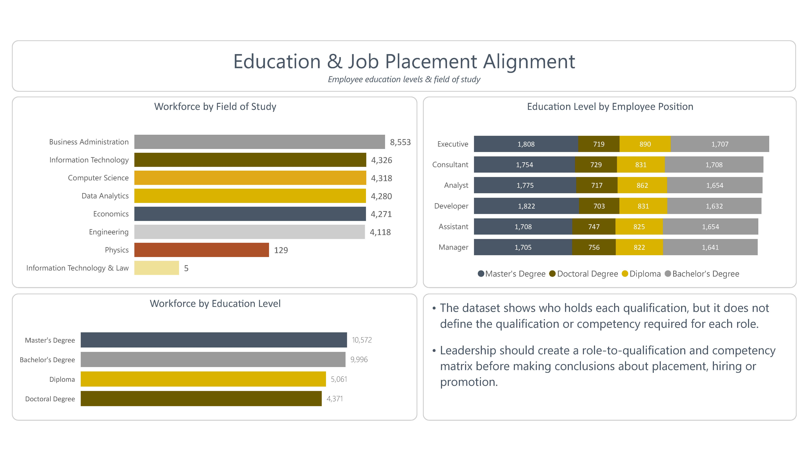
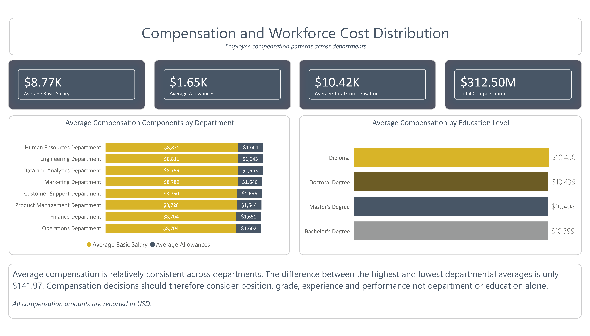
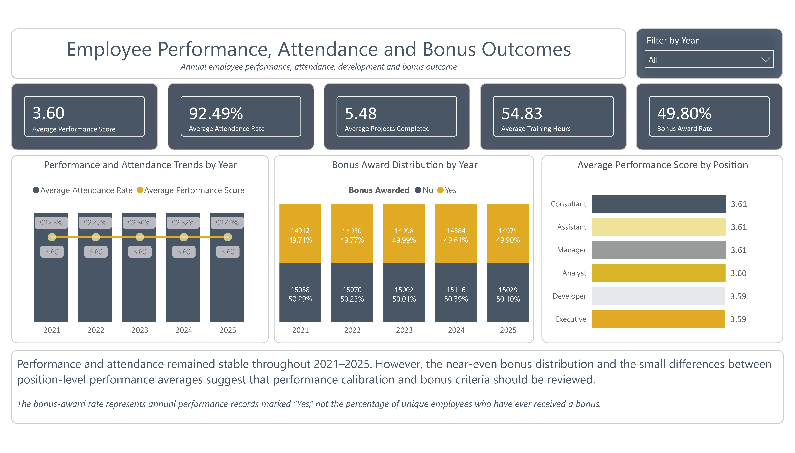
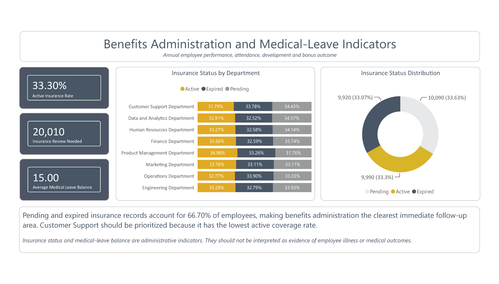
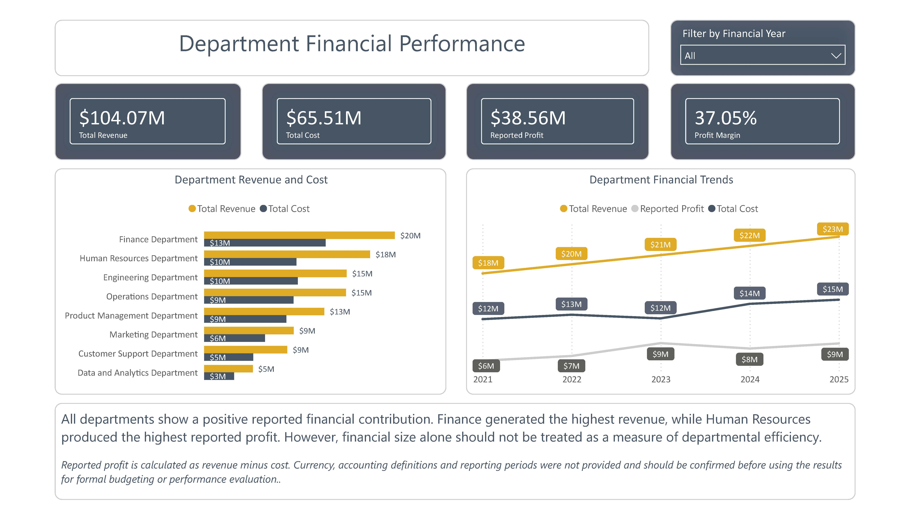
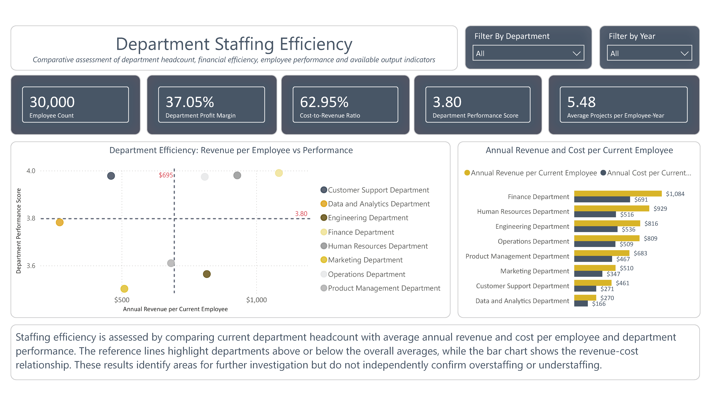

02 · Data Analytics Capstone Project
Employee Workforce Analytics
An end-to-end workforce analytics project developed as part of the
Data Analytics Upskill Programme by Generation Ghana. The project
analyses 30,000 employee records across 8 departments to uncover
insights across demographics, education, employment status,
compensation, revenue, benefits, performance and departmental
efficiency.
Business challenge
Transform a large employee dataset into meaningful insights
that can support management decision-making across workforce
planning, compensation, performance, benefits and departmental
effectiveness.
Process
Prepared and explored the dataset in Microsoft Excel, used
MySQL to answer business questions and identify patterns, and
developed an interactive Power BI dashboard to communicate
workforce and business insights.
Challenge overcome
The dataset contained multiple workforce and business
dimensions, requiring careful organisation of employee,
financial, benefits, performance and departmental information
into meaningful analytical views.
Business outcome
Produced a multi-page Power BI dashboard providing management
with a clearer view of workforce composition, compensation,
performance, benefits, revenue and staffing efficiency.
-
30,000
Employees analysed
-
8
Departments
-
3.60
Average performance
Excel
MySQL
Power BI
HR Analytics
Executive Overview
Provides a high-level view of the workforce and key indicators,
helping management understand the overall employee landscape.
Education & Job Placement Alignment
Examines employee education levels and job placement patterns
to understand how workforce qualifications align with
organisational staffing needs.

Compensation & Workforce Cost Distribution
Analyses salary distribution and workforce cost patterns to
support compensation planning and workforce cost management.

Employee Performance, Attendance & Bonus Outcomes
Examines employee performance, attendance and bonus outcomes
to support performance management and employee development.

Benefits Administration & Medical-Leave Indicators
Provides insights into health insurance, benefits administration
and medical-leave indicators.

Department Financial Performance
Examines financial performance across departments to identify
differences in revenue and workforce-related financial contribution.

Department Staffing Efficiency
Analyses staffing levels across departments to identify workforce
distribution patterns and potential staffing efficiency opportunities.

Project Outcome
This project strengthened my ability to move from raw data to
business insight using Excel, MySQL and Power BI. It also
demonstrates how my HR background can be combined with data
analytics to support evidence-based workforce decisions.